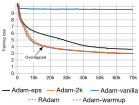

## Standard librariesimport osimport numpy as np import randomimport mathimport jsonfrom functools import partial## Imports for plottingimport matplotlib.pyplot as pltplt.set_cmap('cividis')%matplotlib inline from IPython.display import set_matplotlib_formatsset_matplotlib_formats('svg', 'pdf') # For exportfrom matplotlib.colors import to_rgbimport matplotlibmatplotlib.rcParams['lines.linewidth'] =2.0import seaborn as snssns.reset_orig()## tqdm for loading barsfrom tqdm.notebook import tqdm## PyTorchimport torchimport torch.nn as nnimport torch.nn.functional as Fimport torch.utils.data as dataimport torch.optim as optim## Torchvisionimport torchvisionfrom torchvision.datasets import CIFAR100from torchvision import transforms# PyTorch Lightningtry:import pytorch_lightning as plexceptModuleNotFoundError: # Google Colab does not have PyTorch Lightning installed by default. Hence, we do it here if necessary!pip install --quiet pytorch-lightning>=1.4import pytorch_lightning as plfrom pytorch_lightning.callbacks import LearningRateMonitor, ModelCheckpoint# Path to the folder where the datasets are/should be downloaded (e.g. CIFAR10)DATASET_PATH ="../data"# Path to the folder where the pretrained models are savedCHECKPOINT_PATH ="../saved_models/tutorial6"# Setting the seedpl.seed_everything(42)# Ensure that all operations are deterministic on GPU (if used) for reproducibilitytorch.backends.cudnn.deterministic =Truetorch.backends.cudnn.benchmark =Falsedevice = torch.device("mps:0") if torch.mps.is_available() else torch.device("cpu")print("Device:", device)
Device: mps:0
<Figure size 960x480 with 0 Axes>
Pre-trained models
import urllib.requestfrom urllib.error import HTTPError# Github URL where saved models are stored for this tutorialbase_url ="https://raw.githubusercontent.com/phlippe/saved_models/main/tutorial6/"# Files to downloadpretrained_files = ["ReverseTask.ckpt", "SetAnomalyTask.ckpt"]# Create checkpoint path if it doesn't exist yetos.makedirs(CHECKPOINT_PATH, exist_ok=True)# For each file, check whether it already exists. If not, try downloading it.for file_name in pretrained_files: file_path = os.path.join(CHECKPOINT_PATH, file_name)if"/"in file_name: os.makedirs(file_path.rsplit("/",1)[0], exist_ok=True)ifnot os.path.isfile(file_path): file_url = base_url + file_nameprint(f"Downloading {file_url}...")try: urllib.request.urlretrieve(file_url, file_path)except HTTPError as e:print("Something went wrong. Please try to download the file from the GDrive folder, or contact the author with the full output including the following error:\n", e)
What is Attention?
Attention - recap
The attention mechanism describes a weighted average of (sequence) elements with the weights dynamically computed based on an input query and elements’ keys.
Goal of attention mechanism
Take an average over the features of multiple elements. But instead of weighting each element equally, we want to weight them depending on their actual values.
In other words, we want to dynamically decide on which inputs we want to attend more than others.
What is Attention?
Structure of attention mechanism
Attention mechanism has usually four parts we need to specify:
Query: The query is a feature vector that describes what we are looking for in the sequence, i.e. what would we maybe want to pay attention to.
Keys: For each input element, we have a key which is again a feature vector. This feature vector roughly describes what the element is “offering”, or when it might be important. The keys should be designed such that we can identify the elements we want to pay attention to based on the query.
Values: For each input element, we also have a value vector. This feature vector is the one we want to average over.
Score function: To rate which elements we want to pay attention to, we need to specify a score function \(f_{attn}\). The score function takes the query and a key as input, and output the score/attention weight of the query-key pair. It is usually implemented by simple similarity metrics like a dot product, or a small MLP.
What is Attention?
Softmax
The weights of the average are calculated by a softmax over all score function outputs. Hence, we assign those value vectors a higher weight whose corresponding key is most similar to the query:
The attention applied inside the Transformer architecture is called self-attention.
In self-attention, each sequence element provides a key, value, and query.
For each element, we perform an attention layer where based on its query, we check the similarity of the all sequence elements’ keys, and returned a different, averaged value vector for each element.
In Transformer architecture, we use scaled dot product attention.
Scaled Dot Product Attention
Goal
Have an attention mechanism with which any element in a sequence can attend to any other while still being efficient to compute.
Dot product attention
a set of queries \(Q\in\mathbb{R}^{T\times d_k}\)
keys \(K\in\mathbb{R}^{T\times d_k}\)
values \(V\in\mathbb{R}^{T\times d_v}\)
where \(T\) is the sequence length, and \(d_k\) and \(d_v\) are the hidden dimensionalities.
The attention value from element \(i\) to \(j\) is based on its similarity of the query \(Q_i\) and key \(K_j\), using the dot product as the similarity metric.
The matrix multiplication \(QK^T\) performs the dot product for every possible pair of queries and keys, resulting in a matrix of the shape \(T\times T\).
Each row represents the attention logits for a specific element \(i\) to all other elements in the sequence. On these, we apply a softmax and multiply with the value vector to obtain a weighted mean (the weights being determined by the attention).
Scaled Dot Product Attention
The block Mask (opt.) in the diagram above represents the optional masking of specific entries in the attention matrix. This is for instance used if we stack multiple sequences with different lengths into a batch.
Scaled Dot Product Attention
Scaling factor
This scaling factor \(1/\sqrt{d_k}\) is crucial to maintain an appropriate variance of attention values after initialization. Remember that we initialize our layers with the intention of having equal variance throughout the model, and hence, \(Q\) and \(K\) might also have a variance close to \(1\). However, performing a dot product over two vectors with a variance \(\sigma^2\) results in a scalar having \(d_k\)-times higher variance:
If we do not scale down the variance back to \(\sim\sigma^2\), the softmax over the logits will already saturate to \(1\) for one random element and \(0\) for all others.
The gradients through the softmax will be close to zero so that we can’t learn the parameters appropriately. Note that the extra factor of \(\sigma^2\), i.e., having \(\sigma^4\) instead of \(\sigma^2\), is usually not an issue, since we keep the original variance \(\sigma^2\) close to \(1\) anyways.
Scaled Dot Product Attention
Python function
The function below computes the output features given the triple of queries, keys, and values:
The scaled dot product attention allows a network to attend over a sequence. However, often there are multiple different aspects a sequence element wants to attend to, and a single weighted average is not a good option for it.
Solution
We extend the attention mechanisms to multiple heads, i.e. multiple different query-key-value triplets on the same features.
We transform query, key, and value matrix into \(h\) sub-queries, sub-keys, and sub-values, which we pass through the scaled dot product attention independently. Afterward, we concatenate the heads and combine them with a final weight matrix.
We refer to this as Multi-Head Attention layer with the learnable parameters
\(W_{1...h}^{Q}\in\mathbb{R}^{D\times d_k}\)
\(W_{1...h}^{K}\in\mathbb{R}^{D\times d_k}\)
\(W_{1...h}^{V}\in\mathbb{R}^{D\times d_v}\)
\(W^{O}\in\mathbb{R}^{h\cdot d_v\times d_{out}}\) (\(D\) being the input dimensionality).
Multi-Head Attention
Multi-Head Attention as a computational graph
Multi-Head Attention
Application to NN
How are we applying a Multi-Head Attention layer in a neural network, where we don’t have an arbitrary query, key, and value vector as input?
Looking at the computation graph above, a simple but effective implementation is to set the current feature map in a NN, \(X\in\mathbb{R}^{B\times T\times d_{\text{model}}}\), as \(Q\), \(K\) and \(V\) (\(B\) being the batch size, \(T\) the sequence length, \(d_{\text{model}}\) the hidden dimensionality of \(X\)).
The consecutive weight matrices \(W^{Q}\), \(W^{K}\), and \(W^{V}\) can transform \(X\) to the corresponding feature vectors that represent the queries, keys, and values of the input.
Multi-Head Attention
# Helper function to support different mask shapes.# Output shape supports (batch_size, number of heads, seq length, seq length)# If 2D: broadcasted over batch size and number of heads# If 3D: broadcasted over number of heads# If 4D: leave as isdef expand_mask(mask):assert mask.ndim >=2, "Mask must be at least 2-dimensional with seq_length x seq_length"if mask.ndim ==3: mask = mask.unsqueeze(1)while mask.ndim <4: mask = mask.unsqueeze(0)return mask
Multi-Head Attention
class MultiheadAttention(nn.Module):def__init__(self, input_dim, embed_dim, num_heads):super().__init__()assert embed_dim % num_heads ==0, "Embedding dimension must be 0 modulo number of heads."self.embed_dim = embed_dimself.num_heads = num_headsself.head_dim = embed_dim // num_heads# Stack all weight matrices 1...h together for efficiency# Note that in many implementations you see "bias=False" which is optionalself.qkv_proj = nn.Linear(input_dim, 3*embed_dim)self.o_proj = nn.Linear(embed_dim, input_dim)self._reset_parameters()def _reset_parameters(self):# Original Transformer initialization, see PyTorch documentation nn.init.xavier_uniform_(self.qkv_proj.weight)self.qkv_proj.bias.data.fill_(0) nn.init.xavier_uniform_(self.o_proj.weight)self.o_proj.bias.data.fill_(0)def forward(self, x, mask=None, return_attention=False): batch_size, seq_length, _ = x.size()if mask isnotNone: mask = expand_mask(mask) qkv =self.qkv_proj(x)# Separate Q, K, V from linear output qkv = qkv.reshape(batch_size, seq_length, self.num_heads, 3*self.head_dim) qkv = qkv.permute(0, 2, 1, 3) # [Batch, Head, SeqLen, Dims] q, k, v = qkv.chunk(3, dim=-1)# Determine value outputs values, attention = scaled_dot_product(q, k, v, mask=mask) values = values.permute(0, 2, 1, 3) # [Batch, SeqLen, Head, Dims] values = values.reshape(batch_size, seq_length, self.embed_dim) o =self.o_proj(values)if return_attention:return o, attentionelse:return o
Multi-Head Attention
Permutation-equivariance
One crucial characteristic of the multi-head attention is that it is permutation-equivariant with respect to its inputs. This means that if we switch two input elements in the sequence, e.g. \(X_1\leftrightarrow X_2\) (neglecting the batch dimension for now), the output is exactly the same besides the elements 1 and 2 switched.
Hence, the multi-head attention is actually looking at the input not as a sequence, but as a set of elements.
This property makes the multi-head attention block and the Transformer architecture so powerful and widely applicable!
Comparison with CNNs and RNNs
\(n\) is the sequence length, \(d\) is the representation dimension and \(k\) is the kernel size of convolutions.
Transformer Encoder
History reminder
Originally, the Transformer model was designed for machine translation:
it got an encoder-decoder structure where the encoder takes as input the sentence in the original language and generates an attention-based representation.
on the other hand, the decoder attends over the encoded information and generates the translated sentence in an autoregressive manner, as in a standard RNN.
This structure is extremely useful for Sequence-to-Sequence tasks with the necessity of autoregressive decoding.
Full architecture
Transformer Encoder
Encoder
The encoder consists of \(N\) identical blocks that are applied in sequence.
Taking as input \(x\), it is first passed through a Multi-Head Attention block as we have implemented above.
The output is added to the original input using a residual connection, and we apply a consecutive Layer Normalization on the sum.
Overall, it calculates \(\text{LayerNorm}(x+\text{Multihead}(x,x,x))\) (\(x\) being \(Q\), \(K\) and \(V\) input to the attention layer).
Transformer Encoder
Residual connections
The residual connection is crucial in the Transformer architecture for two reasons:
Similar to ResNets, Transformers are designed to be very deep. Some models contain more than 24 blocks in the encoder. Hence, the residual connections are crucial for enabling a smooth gradient flow through the model.
Without the residual connection, the information about the original sequence is lost. Remember that the Multi-Head Attention layer ignores the position of elements in a sequence, and can only learn it based on the input features. Removing the residual connections would mean that this information is lost after the first attention layer (after initialization), and with a randomly initialized query and key vector, the output vectors for position \(i\) has no relation to its original input.
Layer Normalization
Important
The Layer Normalization also plays an important role in the Transformer architecture as it enables faster training and provides small regularization. Additionally, it ensures that the features are in a similar magnitude among the elements in the sequence.
Additional Feed-Forward NN
Description
Additionally to the Multi-Head Attention, a small fully connected feed-forward network is added to the model, which is applied to each position separately and identically. Specifically, the model uses a Linear\(\to\)ReLU\(\to\)Linear MLP. The full transformation including the residual connection can be expressed as:
This MLP adds extra complexity to the model and allows transformations on each sequence element separately. You can imagine as this allows the model to “post-process” the new information added by the previous Multi-Head Attention, and prepare it for the next attention block.
Additional Feed-Forward NN
Dimensionality
Usually, the inner dimensionality of the MLP is 2-8\(\times\) larger than \(d_{\text{model}}\), i.e. the dimensionality of the original input \(x\).
The general advantage of a wider layer instead of a narrow, multi-layer MLP is the faster, parallelizable execution.
Encoder implementation
class EncoderBlock(nn.Module):def__init__(self, input_dim, num_heads, dim_feedforward, dropout=0.0):""" Inputs: input_dim - Dimensionality of the input num_heads - Number of heads to use in the attention block dim_feedforward - Dimensionality of the hidden layer in the MLP dropout - Dropout probability to use in the dropout layers """super().__init__()# Attention layerself.self_attn = MultiheadAttention(input_dim, input_dim, num_heads)# Two-layer MLPself.linear_net = nn.Sequential( nn.Linear(input_dim, dim_feedforward), nn.Dropout(dropout), nn.ReLU(inplace=True), nn.Linear(dim_feedforward, input_dim) )# Layers to apply in between the main layersself.norm1 = nn.LayerNorm(input_dim)self.norm2 = nn.LayerNorm(input_dim)self.dropout = nn.Dropout(dropout)def forward(self, x, mask=None):# Attention part attn_out =self.self_attn(x, mask=mask) x = x +self.dropout(attn_out) x =self.norm1(x)# MLP part linear_out =self.linear_net(x) x = x +self.dropout(linear_out) x =self.norm2(x)return x
Transformer Encoder
class TransformerEncoder(nn.Module):def__init__(self, num_layers, **block_args):super().__init__()self.layers = nn.ModuleList([EncoderBlock(**block_args) for _ inrange(num_layers)])def forward(self, x, mask=None):for l inself.layers: x = l(x, mask=mask)return xdef get_attention_maps(self, x, mask=None): attention_maps = []for l inself.layers: _, attn_map = l.self_attn(x, mask=mask, return_attention=True) attention_maps.append(attn_map) x = l(x)return attention_maps
Positional encoding
Rationale
Instead of learning an embedding for every possible position, the better option is to use feature patterns that the network can identify from the features and potentially generalize to larger sequences. The specific pattern chosen by Vaswani et al. are sine and cosine functions of different frequencies, as follows:
\[
PE_{(pos,i)} = \begin{cases}
\sin\left(\frac{pos}{10000^{i/d_{\text{model}}}}\right) & \text{if}\hspace{3mm} i \text{ mod } 2=0\\
\cos\left(\frac{pos}{10000^{(i-1)/d_{\text{model}}}}\right) & \text{otherwise}\\
\end{cases}
\]
Positional encoding
Interpretation
\(PE_{(pos,i)}\) represents the position encoding at position \(pos\) in the sequence, and hidden dimensionality \(i\). These values, concatenated for all hidden dimensions, are added to the original input features (in the Transformer visualization above, see “Positional encoding”), and constitute the position information. We distinguish between even (\(i \text{ mod } 2=0\)) and uneven (\(i \text{ mod } 2=1\)) hidden dimensionalities where we apply a sine/cosine respectively.
The intuition behind this encoding is that you can represent \(PE_{(pos+k,:)}\) as a linear function of \(PE_{(pos,:)}\), which might allow the model to easily attend to relative positions. The wavelengths in different dimensions range from \(2\pi\) to \(10000\cdot 2\pi\).
Positional encoding implementation
class PositionalEncoding(nn.Module):def__init__(self, d_model, max_len=5000):""" Inputs d_model - Hidden dimensionality of the input. max_len - Maximum length of a sequence to expect. """super().__init__()# Create matrix of [SeqLen, HiddenDim] representing the positional encoding for max_len inputs pe = torch.zeros(max_len, d_model) position = torch.arange(0, max_len, dtype=torch.float).unsqueeze(1) div_term = torch.exp(torch.arange(0, d_model, 2).float() * (-math.log(10000.0) / d_model)) pe[:, 0::2] = torch.sin(position * div_term) pe[:, 1::2] = torch.cos(position * div_term) pe = pe.unsqueeze(0)# register_buffer => Tensor which is not a parameter, but should be part of the modules state.# Used for tensors that need to be on the same device as the module.# persistent=False tells PyTorch to not add the buffer to the state dict (e.g. when we save the model) self.register_buffer('pe', pe, persistent=False)def forward(self, x): x = x +self.pe[:, :x.size(1)]return x
sns.set_theme()fig, ax = plt.subplots(2, 2, figsize=(12,4))ax = [a for a_list in ax for a in a_list]for i inrange(len(ax)): ax[i].plot(np.arange(1,17), pe[i,:16], color=f'C{i}', marker="o", markersize=6, markeredgecolor="black") ax[i].set_title(f"Encoding in hidden dimension {i+1}") ax[i].set_xlabel("Position in sequence", fontsize=10) ax[i].set_ylabel("Positional encoding", fontsize=10) ax[i].set_xticks(np.arange(1,17)) ax[i].tick_params(axis='both', which='major', labelsize=10) ax[i].tick_params(axis='both', which='minor', labelsize=8) ax[i].set_ylim(-1.2, 1.2)fig.subplots_adjust(hspace=0.8)sns.reset_orig()plt.show()
Learning rate warm-up
Description
We gradually increase the learning rate from 0 on to our originally specified learning rate in the first few iterations.
Training a deep Transformer without learning rate warm-up can make the model diverge and achieve a much worse performance on training and testing.

Learning rate warm-up
Intuition
Adam uses the bias correction factors which however can lead to a higher variance in the adaptive learning rate during the first iterations. Improved optimizers like RAdam have been shown to overcome this issue, not requiring warm-up for training Transformers.
The iteratively applied Layer Normalization across layers can lead to very high gradients during the first iterations, which can be solved by using Pre-Layer Normalization (similar to Pre-Activation ResNet), or replacing Layer Normalization by other techniques (Adaptive Normalization, Power Normalization).
# Needed for initializing the lr schedulerp = nn.Parameter(torch.empty(4,4))optimizer = optim.Adam([p], lr=1e-3)lr_scheduler = CosineWarmupScheduler(optimizer=optimizer, warmup=100, max_iters=2000)# Plottingepochs =list(range(2000))sns.set()plt.figure(figsize=(8,3))plt.plot(epochs, [lr_scheduler.get_lr_factor(e) for e in epochs])plt.ylabel("Learning rate factor")plt.xlabel("Iterations (in batches)")plt.title("Cosine Warm-up Learning Rate Scheduler")plt.show()sns.reset_orig()
PyTorch Lightning Module
class TransformerPredictor(pl.LightningModule):def__init__(self, input_dim, model_dim, num_classes, num_heads, num_layers, lr, warmup, max_iters, dropout=0.0, input_dropout=0.0):""" Inputs: input_dim - Hidden dimensionality of the input model_dim - Hidden dimensionality to use inside the Transformer num_classes - Number of classes to predict per sequence element num_heads - Number of heads to use in the Multi-Head Attention blocks num_layers - Number of encoder blocks to use. lr - Learning rate in the optimizer warmup - Number of warmup steps. Usually between 50 and 500 max_iters - Number of maximum iterations the model is trained for. This is needed for the CosineWarmup scheduler dropout - Dropout to apply inside the model input_dropout - Dropout to apply on the input features """super().__init__()self.save_hyperparameters()self._create_model()def _create_model(self):# Input dim -> Model dimself.input_net = nn.Sequential( nn.Dropout(self.hparams.input_dropout), nn.Linear(self.hparams.input_dim, self.hparams.model_dim) )# Positional encoding for sequencesself.positional_encoding = PositionalEncoding(d_model=self.hparams.model_dim)# Transformerself.transformer = TransformerEncoder(num_layers=self.hparams.num_layers, input_dim=self.hparams.model_dim, dim_feedforward=2*self.hparams.model_dim, num_heads=self.hparams.num_heads, dropout=self.hparams.dropout)# Output classifier per sequence lementself.output_net = nn.Sequential( nn.Linear(self.hparams.model_dim, self.hparams.model_dim), nn.LayerNorm(self.hparams.model_dim), nn.ReLU(inplace=True), nn.Dropout(self.hparams.dropout), nn.Linear(self.hparams.model_dim, self.hparams.num_classes) ) def forward(self, x, mask=None, add_positional_encoding=True):""" Inputs: x - Input features of shape [Batch, SeqLen, input_dim] mask - Mask to apply on the attention outputs (optional) add_positional_encoding - If True, we add the positional encoding to the input. Might not be desired for some tasks. """ x =self.input_net(x)if add_positional_encoding: x =self.positional_encoding(x) x =self.transformer(x, mask=mask) x =self.output_net(x)return x@torch.no_grad()def get_attention_maps(self, x, mask=None, add_positional_encoding=True):""" Function for extracting the attention matrices of the whole Transformer for a single batch. Input arguments same as the forward pass. """ x =self.input_net(x)if add_positional_encoding: x =self.positional_encoding(x) attention_maps =self.transformer.get_attention_maps(x, mask=mask)return attention_mapsdef configure_optimizers(self): optimizer = optim.Adam(self.parameters(), lr=self.hparams.lr)# Apply lr scheduler per step lr_scheduler = CosineWarmupScheduler(optimizer, warmup=self.hparams.warmup, max_iters=self.hparams.max_iters)return [optimizer], [{'scheduler': lr_scheduler, 'interval': 'step'}]def training_step(self, batch, batch_idx):raiseNotImplementedErrordef validation_step(self, batch, batch_idx):raiseNotImplementedErrordef test_step(self, batch, batch_idx):raiseNotImplementedError
Applications
Sequence to Sequence
Description
A Sequence-to-Sequence task represents a task where the input and the output is a sequence, not necessarily of the same length. Popular tasks in this domain include:
machine translation
summarization
For this, we usually have a Transformer encoder for interpreting the input sequence, and a decoder for generating the output in an autoregressive manner.
Sequence to Sequence
Task definition
Here, however, we will go back to a much simpler example task and use only the encoder.
Given a sequence of \(N\) numbers between \(0\) and \(M\), the task is to reverse the input sequence. In Numpy notation, if our input is \(x\), the output should be \(x\)[::-1].
Although this task sounds very simple, RNNs can have issues with such because the task requires long-term dependencies. Transformers are built to support such, and hence, we expect it to perform very well.
During training, we pass the input sequence through the Transformer encoder and predict the output for each input token.
We use the standard Cross-Entropy loss to perform this. Every number is represented as a one-hot vector.
An alternative to a one-hot vector is using a learned embedding vector as it is provided by the PyTorch module nn.Embedding.
However, using a one-hot vector with an additional linear layer as in our case has the same effect as an embedding layer (self.input_net maps one-hot vector to a dense vector, where each row of the weight matrix represents the embedding for a specific category).
Sequence to Sequence
class ReversePredictor(TransformerPredictor):def _calculate_loss(self, batch, mode="train"):# Fetch data and transform categories to one-hot vectors inp_data, labels = batch inp_data = F.one_hot(inp_data, num_classes=self.hparams.num_classes).float()# Perform prediction and calculate loss and accuracy preds =self.forward(inp_data, add_positional_encoding=True) loss = F.cross_entropy(preds.view(-1,preds.size(-1)), labels.view(-1)) acc = (preds.argmax(dim=-1) == labels).float().mean()# Loggingself.log(f"{mode}_loss", loss)self.log(f"{mode}_acc", acc)return loss, accdef training_step(self, batch, batch_idx): loss, _ =self._calculate_loss(batch, mode="train")return lossdef validation_step(self, batch, batch_idx): _ =self._calculate_loss(batch, mode="val")def test_step(self, batch, batch_idx): _ =self._calculate_loss(batch, mode="test")
Sequence to Sequence
Training: gradient clipping
gradient_clip_val: this clips the norm of the gradients for all parameters before taking an optimizer step and prevents the model from diverging if we obtain very high gradients at, for instance, sharp loss surfaces (see many good blog posts on gradient clipping, like DeepAI glossary).
For Transformers, gradient clipping can help to further stabilize the training during the first few iterations, and also afterward.
In plain PyTorch, you can apply gradient clipping via torch.nn.utils.clip_grad_norm_(...) (see documentation).
The clip value is usually between 0.5 and 10, depending on how harsh you want to clip large gradients.
Sequence to Sequence
def train_reverse(**kwargs):# Create a PyTorch Lightning trainer with the generation callback root_dir = os.path.join(CHECKPOINT_PATH, "ReverseTask") os.makedirs(root_dir, exist_ok=True) trainer = pl.Trainer(default_root_dir=root_dir, callbacks=[ModelCheckpoint(save_weights_only=True, mode="max", monitor="val_acc")], accelerator="gpu"ifstr(device).startswith("cuda") else"cpu", devices=1, max_epochs=10, gradient_clip_val=5) trainer.logger._default_hp_metric =None# Optional logging argument that we don't need# Check whether pretrained model exists. If yes, load it and skip training pretrained_filename = os.path.join(CHECKPOINT_PATH, "ReverseTask.ckpt")if os.path.isfile(pretrained_filename):print("Found pretrained model, loading...") model = ReversePredictor.load_from_checkpoint(pretrained_filename)else: model = ReversePredictor(max_iters=trainer.max_epochs*len(train_loader), **kwargs) trainer.fit(model, train_loader, val_loader)# Test best model on validation and test set val_result = trainer.test(model, val_loader, verbose=False) test_result = trainer.test(model, test_loader, verbose=False) result = {"test_acc": test_result[0]["test_acc"], "val_acc": val_result[0]["test_acc"]} model = model.to(device)return model, result
Result: the model has learned to attend to the token that is on the flipped index of itself.
Set Anomaly Detection
Issues with order
RNNs can only be applied on sets by assuming an order in the data, which however biases the model towards a non-existing order in the data.
Vinyals et al. (2015) and other papers have shown that the assumed order can have a significant impact on the model’s performance, and hence, we should try to not use RNNs on sets.
Ideally, our model should be permutation-equivariant/invariant such that the output is the same no matter how we sort the elements in a set.
Description
Set Anomaly Detection: we try to find the element(s) in a set that does not fit the others. In the research community, the common application of anomaly detection is performed on a set of images, where \(N-1\) images belong to the same category/have the same high-level features while one belongs to another category.
Set Anomaly Detection
Dataset notes
We will use the CIFAR100 dataset. CIFAR100 has 600 images for 100 classes each with a resolution of 32x32, similar to CIFAR10. We will show the model a set of 9 images of one class, and 1 image from another class. The task is to find the image that is from a different class than the other images.
Instead of raw images, we will use a pre-trained ResNet34 model from the torchvision package to obtain high-level, low-dimensional features of the images.
Set Anomaly Detection
# ImageNet statisticsDATA_MEANS = np.array([0.485, 0.456, 0.406])DATA_STD = np.array([0.229, 0.224, 0.225])# As torch tensors for later preprocessingTORCH_DATA_MEANS = torch.from_numpy(DATA_MEANS).view(1,3,1,1)TORCH_DATA_STD = torch.from_numpy(DATA_STD).view(1,3,1,1)# Resize to 224x224, and normalize to ImageNet statistictransform = transforms.Compose([transforms.Resize((224,224)), transforms.ToTensor(), transforms.Normalize(DATA_MEANS, DATA_STD) ])# Loading the training dataset. train_set = CIFAR100(root=DATASET_PATH, train=True, transform=transform, download=True)# Loading the test settest_set = CIFAR100(root=DATASET_PATH, train=False, transform=transform, download=True)
Set Anomaly Detection
import osos.environ["TORCH_HOME"] = CHECKPOINT_PATHpretrained_model = torchvision.models.resnet34(weights='IMAGENET1K_V1')# Remove classification layer# In some models, it is called "fc", others have "classifier"# Setting both to an empty sequential represents an identity map of the final features.pretrained_model.fc = nn.Sequential()pretrained_model.classifier = nn.Sequential()# To GPUpretrained_model = pretrained_model.to(device)# Only eval, no gradient requiredpretrained_model.eval()for p in pretrained_model.parameters(): p.requires_grad =False
## Split train into train+val# Get labels from train setlabels = train_set.targets# Get indices of images per classlabels = torch.LongTensor(labels)num_labels = labels.max()+1sorted_indices = torch.argsort(labels).reshape(num_labels, -1) # [classes, num_imgs per class]# Determine number of validation images per classnum_val_exmps = sorted_indices.shape[1] //10# Get image indices for validation and trainingval_indices = sorted_indices[:,:num_val_exmps].reshape(-1)train_indices = sorted_indices[:,num_val_exmps:].reshape(-1)# Group corresponding image features and labelstrain_feats, train_labels = train_set_feats[train_indices], labels[train_indices]val_feats, val_labels = train_set_feats[val_indices], labels[val_indices]
Set Anomaly Detection
class SetAnomalyDataset(data.Dataset):def__init__(self, img_feats, labels, set_size=10, train=True):""" Inputs: img_feats - Tensor of shape [num_imgs, img_dim]. Represents the high-level features. labels - Tensor of shape [num_imgs], containing the class labels for the images set_size - Number of elements in a set. N-1 are sampled from one class, and one from another one. train - If True, a new set will be sampled every time __getitem__ is called. """super().__init__()self.img_feats = img_featsself.labels = labelsself.set_size = set_size-1# The set size is here the size of correct imagesself.train = train# Tensors with indices of the images per classself.num_labels = labels.max()+1self.img_idx_by_label = torch.argsort(self.labels).reshape(self.num_labels, -1)ifnot train:self.test_sets =self._create_test_sets()def _create_test_sets(self):# Pre-generates the sets for each image for the test set test_sets = [] num_imgs =self.img_feats.shape[0] np.random.seed(42) test_sets = [self.sample_img_set(self.labels[idx]) for idx inrange(num_imgs)] test_sets = torch.stack(test_sets, dim=0)return test_setsdef sample_img_set(self, anomaly_label):""" Samples a new set of images, given the label of the anomaly. The sampled images come from a different class than anomaly_label """# Sample class from 0,...,num_classes-1 while skipping anomaly_label as class set_label = np.random.randint(self.num_labels-1)if set_label >= anomaly_label: set_label +=1# Sample images from the class determined above img_indices = np.random.choice(self.img_idx_by_label.shape[1], size=self.set_size, replace=False) img_indices =self.img_idx_by_label[set_label, img_indices]return img_indicesdef__len__(self):returnself.img_feats.shape[0]def__getitem__(self, idx): anomaly =self.img_feats[idx]ifself.train: # If train => sample img_indices =self.sample_img_set(self.labels[idx])else: # If test => use pre-generated ones img_indices =self.test_sets[idx]# Concatenate images. The anomaly is always the last image for simplicity img_set = torch.cat([self.img_feats[img_indices], anomaly[None]], dim=0) indices = torch.cat([img_indices, torch.LongTensor([idx])], dim=0) label = img_set.shape[0]-1# We return the indices of the images for visualization purpose. "Label" is the index of the anomalyreturn img_set, indices, label
class AnomalyPredictor(TransformerPredictor):def _calculate_loss(self, batch, mode="train"): img_sets, _, labels = batch preds =self.forward(img_sets, add_positional_encoding=False) # No positional encodings as it is a set, not a sequence! preds = preds.squeeze(dim=-1) # Shape: [Batch_size, set_size] loss = F.cross_entropy(preds, labels) # Softmax/CE over set dimension acc = (preds.argmax(dim=-1) == labels).float().mean()self.log(f"{mode}_loss", loss)self.log(f"{mode}_acc", acc, on_step=False, on_epoch=True)return loss, accdef training_step(self, batch, batch_idx): loss, _ =self._calculate_loss(batch, mode="train")return lossdef validation_step(self, batch, batch_idx): _ =self._calculate_loss(batch, mode="val")def test_step(self, batch, batch_idx): _ =self._calculate_loss(batch, mode="test")
Set Anomaly Detection
def train_anomaly(**kwargs):# Create a PyTorch Lightning trainer with the generation callback root_dir = os.path.join(CHECKPOINT_PATH, "SetAnomalyTask") os.makedirs(root_dir, exist_ok=True) trainer = pl.Trainer(default_root_dir=root_dir, callbacks=[ModelCheckpoint(save_weights_only=True, mode="max", monitor="val_acc")], accelerator="gpu"ifstr(device).startswith("cuda") else"cpu", devices=1, max_epochs=100, gradient_clip_val=2) trainer.logger._default_hp_metric =None# Optional logging argument that we don't need# Check whether pretrained model exists. If yes, load it and skip training pretrained_filename = os.path.join(CHECKPOINT_PATH, "SetAnomalyTask.ckpt")if os.path.isfile(pretrained_filename):print("Found pretrained model, loading...") model = AnomalyPredictor.load_from_checkpoint(pretrained_filename)else: model = AnomalyPredictor(max_iters=trainer.max_epochs*len(train_anom_loader), **kwargs) trainer.fit(model, train_anom_loader, val_anom_loader) model = AnomalyPredictor.load_from_checkpoint(trainer.checkpoint_callback.best_model_path)# Test best model on validation and test set train_result = trainer.test(model, train_anom_loader, verbose=False) val_result = trainer.test(model, val_anom_loader, verbose=False) test_result = trainer.test(model, test_anom_loader, verbose=False) result = {"test_acc": test_result[0]["test_acc"], "val_acc": val_result[0]["test_acc"], "train_acc": train_result[0]["test_acc"]} model = model.to(device)return model, result
## Standard librariesimport osimport numpy as npimport randomimport mathimport jsonfrom functools import partialfrom PIL import Image## Imports for plottingimport matplotlib.pyplot as pltplt.set_cmap('cividis')%matplotlib inlinefrom IPython.display import set_matplotlib_formatsset_matplotlib_formats('svg', 'pdf') # For exportfrom matplotlib.colors import to_rgbimport matplotlibmatplotlib.rcParams['lines.linewidth'] =2.0import seaborn as snssns.reset_orig()## tqdm for loading barsfrom tqdm.notebook import tqdm## PyTorchimport torchimport torch.nn as nnimport torch.nn.functional as Fimport torch.utils.data as dataimport torch.optim as optim## Torchvisionimport torchvisionfrom torchvision.datasets import CIFAR10from torchvision import transforms# PyTorch Lightningtry:import pytorch_lightning as plexceptModuleNotFoundError: # Google Colab does not have PyTorch Lightning installed by default. Hence, we do it here if necessary!pip install --quiet pytorch-lightning>=1.4import pytorch_lightning as plfrom pytorch_lightning.callbacks import LearningRateMonitor, ModelCheckpoint# Import tensorboard%load_ext tensorboard# Path to the folder where the datasets are/should be downloaded (e.g. CIFAR10)DATASET_PATH ="../data"# Path to the folder where the pretrained models are savedCHECKPOINT_PATH ="../saved_models/tutorial15"# Setting the seedpl.seed_everything(42)# Ensure that all operations are deterministic on GPU (if used) for reproducibilitytorch.backends.mps.deterministic =Truetorch.backends.mps.benchmark =False
The tensorboard extension is already loaded. To reload it, use:
%reload_ext tensorboard
<Figure size 960x480 with 0 Axes>
Vision Transformers
import urllib.requestfrom urllib.error import HTTPError# Github URL where saved models are stored for this tutorialbase_url ="https://raw.githubusercontent.com/phlippe/saved_models/main/"# Files to downloadpretrained_files = ["tutorial15/ViT.ckpt", "tutorial15/tensorboards/ViT/events.out.tfevents.ViT","tutorial5/tensorboards/ResNet/events.out.tfevents.resnet"]# Create checkpoint path if it doesn't exist yetos.makedirs(CHECKPOINT_PATH, exist_ok=True)# For each file, check whether it already exists. If not, try downloading it.for file_name in pretrained_files: file_path = os.path.join(CHECKPOINT_PATH, file_name.split("/",1)[1])if"/"in file_name.split("/",1)[1]: os.makedirs(file_path.rsplit("/",1)[0], exist_ok=True)ifnot os.path.isfile(file_path): file_url = base_url + file_nameprint(f"Downloading {file_url}...")try: urllib.request.urlretrieve(file_url, file_path)except HTTPError as e:print("Something went wrong. Please try to download the file from the GDrive folder, or contact the author with the full output including the following error:\n", e)
test_transform = transforms.Compose([transforms.ToTensor(), transforms.Normalize([0.49139968, 0.48215841, 0.44653091], [0.24703223, 0.24348513, 0.26158784]) ])# For training, we add some augmentation. Networks are too powerful and would overfit.train_transform = transforms.Compose([transforms.RandomHorizontalFlip(), transforms.RandomResizedCrop((32,32),scale=(0.8,1.0),ratio=(0.9,1.1)), transforms.ToTensor(), transforms.Normalize([0.49139968, 0.48215841, 0.44653091], [0.24703223, 0.24348513, 0.26158784]) ])# Loading the training dataset. We need to split it into a training and validation part# We need to do a little trick because the validation set should not use the augmentation.train_dataset = CIFAR10(root=DATASET_PATH, train=True, transform=train_transform, download=True)val_dataset = CIFAR10(root=DATASET_PATH, train=True, transform=test_transform, download=True)pl.seed_everything(42)train_set, _ = torch.utils.data.random_split(train_dataset, [45000, 5000])pl.seed_everything(42)_, val_set = torch.utils.data.random_split(val_dataset, [45000, 5000])# Loading the test settest_set = CIFAR10(root=DATASET_PATH, train=False, transform=test_transform, download=True)# We define a set of data loaders that we can use for various purposes later.train_loader = data.DataLoader(train_set, batch_size=128, shuffle=True, drop_last=True, pin_memory=True, num_workers=4)val_loader = data.DataLoader(val_set, batch_size=128, shuffle=False, drop_last=False, num_workers=4)test_loader = data.DataLoader(test_set, batch_size=128, shuffle=False, drop_last=False, num_workers=4)# Visualize some examplesNUM_IMAGES =4CIFAR_images = torch.stack([val_set[idx][0] for idx inrange(NUM_IMAGES)], dim=0)img_grid = torchvision.utils.make_grid(CIFAR_images, nrow=4, normalize=True, pad_value=0.9)img_grid = img_grid.permute(1, 2, 0)plt.figure(figsize=(8,8))plt.title("Image examples of the CIFAR10 dataset")plt.imshow(img_grid)plt.axis('off')plt.show()plt.close()
Vision Transformers
Transformers for image classification
The Vision Transformer is a model for image classification that views images as sequences of smaller patches.
As a preprocessing step, we split an image of, for example, \(48\times 48\) pixels into 9 \(16\times 16\) patches.
Each of those patches is considered to be a “word”/“token” and projected to a feature space.
With adding positional encodings and a token for classification on top, we can apply a Transformer as usual to this sequence and start training it for our task.
Vision Transformers
Vision Transformers
Image preprocessing
An image of size \(N\times N\) has to be split into \((N/M)^2\) patches of size \(M\times M\). These represent the input words to the Transformer.
def img_to_patch(x, patch_size, flatten_channels=True):""" Inputs: x - torch.Tensor representing the image of shape [B, C, H, W] patch_size - Number of pixels per dimension of the patches (integer) flatten_channels - If True, the patches will be returned in a flattened format as a feature vector instead of a image grid. """ B, C, H, W = x.shape x = x.reshape(B, C, H//patch_size, patch_size, W//patch_size, patch_size) x = x.permute(0, 2, 4, 1, 3, 5) # [B, H', W', C, p_H, p_W] x = x.flatten(1,2) # [B, H'*W', C, p_H, p_W]if flatten_channels: x = x.flatten(2,4) # [B, H'*W', C*p_H*p_W]return x
Vision Transformers
Visualization
img_patches = img_to_patch(CIFAR_images, patch_size=4, flatten_channels=False)fig, ax = plt.subplots(CIFAR_images.shape[0], 1, figsize=(14,3))fig.suptitle("Images as input sequences of patches")for i inrange(CIFAR_images.shape[0]): img_grid = torchvision.utils.make_grid(img_patches[i], nrow=64, normalize=True, pad_value=0.9) img_grid = img_grid.permute(1, 2, 0) ax[i].imshow(img_grid) ax[i].axis('off')plt.show()plt.close()
Vision Transformers
Pre-Layer Normalization: the idea is to apply Layer Normalization not in between residual blocks, but instead as a first layer in the residual blocks. This reorganization of the layers supports better gradient flow and removes the necessity of a warm-up stage.
Vision Transformers
class AttentionBlock(nn.Module):def__init__(self, embed_dim, hidden_dim, num_heads, dropout=0.0):""" Inputs: embed_dim - Dimensionality of input and attention feature vectors hidden_dim - Dimensionality of hidden layer in feed-forward network (usually 2-4x larger than embed_dim) num_heads - Number of heads to use in the Multi-Head Attention block dropout - Amount of dropout to apply in the feed-forward network """super().__init__()self.layer_norm_1 = nn.LayerNorm(embed_dim)self.attn = nn.MultiheadAttention(embed_dim, num_heads, dropout=dropout)self.layer_norm_2 = nn.LayerNorm(embed_dim)self.linear = nn.Sequential( nn.Linear(embed_dim, hidden_dim), nn.GELU(), nn.Dropout(dropout), nn.Linear(hidden_dim, embed_dim), nn.Dropout(dropout) )def forward(self, x): inp_x =self.layer_norm_1(x) x = x +self.attn(inp_x, inp_x, inp_x)[0] x = x +self.linear(self.layer_norm_2(x))return x
Vision Transformers
Modules
Encoder
A linear projection layer that maps the input patches to a feature vector of larger size. It is implemented by a simple linear layer that takes each \(M\times M\) patch independently as input.
A classification token that is added to the input sequence. We will use the output feature vector of the classification token (CLS token in short) for determining the classification prediction.
Learnable positional encodings that are added to the tokens before being processed by the Transformer. We can learn them instead of having the pattern of sine and cosine functions.
An MLP head that takes the output feature vector of the CLS token, and maps it to a classification prediction. This is usually implemented by a small feed-forward network or even a single linear layer.
Vision Transformers
class VisionTransformer(nn.Module):def__init__(self, embed_dim, hidden_dim, num_channels, num_heads, num_layers, num_classes, patch_size, num_patches, dropout=0.0):""" Inputs: embed_dim - Dimensionality of the input feature vectors to the Transformer hidden_dim - Dimensionality of the hidden layer in the feed-forward networks within the Transformer num_channels - Number of channels of the input (3 for RGB) num_heads - Number of heads to use in the Multi-Head Attention block num_layers - Number of layers to use in the Transformer num_classes - Number of classes to predict patch_size - Number of pixels that the patches have per dimension num_patches - Maximum number of patches an image can have dropout - Amount of dropout to apply in the feed-forward network and on the input encoding """super().__init__()self.patch_size = patch_size# Layers/Networksself.input_layer = nn.Linear(num_channels*(patch_size**2), embed_dim)self.transformer = nn.Sequential(*[AttentionBlock(embed_dim, hidden_dim, num_heads, dropout=dropout) for _ inrange(num_layers)])self.mlp_head = nn.Sequential( nn.LayerNorm(embed_dim), nn.Linear(embed_dim, num_classes) )self.dropout = nn.Dropout(dropout)# Parameters/Embeddingsself.cls_token = nn.Parameter(torch.randn(1,1,embed_dim))self.pos_embedding = nn.Parameter(torch.randn(1,1+num_patches,embed_dim))def forward(self, x):# Preprocess input x = img_to_patch(x, self.patch_size) B, T, _ = x.shape x =self.input_layer(x)# Add CLS token and positional encoding cls_token =self.cls_token.repeat(B, 1, 1) x = torch.cat([cls_token, x], dim=1) x = x +self.pos_embedding[:,:T+1]# Apply Transforrmer x =self.dropout(x) x = x.transpose(0, 1) x =self.transformer(x)# Perform classification prediction cls = x[0] out =self.mlp_head(cls)return out
def train_model(**kwargs): trainer = pl.Trainer(default_root_dir=os.path.join(CHECKPOINT_PATH, "ViT"), accelerator="gpu"ifstr(device).startswith("cuda") else"cpu", devices=1, max_epochs=180, callbacks=[ModelCheckpoint(save_weights_only=True, mode="max", monitor="val_acc"), LearningRateMonitor("epoch")]) trainer.logger._log_graph =True# If True, we plot the computation graph in tensorboard trainer.logger._default_hp_metric =None# Optional logging argument that we don't need# Check whether pretrained model exists. If yes, load it and skip training pretrained_filename = os.path.join(CHECKPOINT_PATH, "ViT.ckpt")if os.path.isfile(pretrained_filename):print(f"Found pretrained model at {pretrained_filename}, loading...") model = ViT.load_from_checkpoint(pretrained_filename) # Automatically loads the model with the saved hyperparameterselse: pl.seed_everything(42) # To be reproducable model = ViT(**kwargs) trainer.fit(model, train_loader, val_loader) model = ViT.load_from_checkpoint(trainer.checkpoint_callback.best_model_path) # Load best checkpoint after training# Test best model on validation and test set val_result = trainer.test(model, val_loader, verbose=False) test_result = trainer.test(model, test_loader, verbose=False) result = {"test": test_result[0]["test_acc"], "val": val_result[0]["test_acc"]}return model, result
Vision Transformers
Considerations
patch size: the smaller we make the patches, the longer the input sequences to the Transformer become. While in general, this allows the Transformer to model more complex functions, it requires a longer computation time due to its quadratic memory usage in the attention layer.
the embedding and hidden dimensionality have a similar impact on a Transformer as to an MLP. The larger the sizes, the more complex the model becomes, and the longer it takes to train. In Transformers, however, we have one more aspect to consider: the query-key sizes in the Multi-Head Attention layers. Each key has the feature dimensionality of embed_dim/num_heads.
the learning rate for Transformers is usually relatively small, and in papers, a common value to use is 3e-5.
Found pretrained model at ../saved_models/tutorial15/ViT.ckpt, loading...
ViT results {'test': 0.7713000178337097, 'val': 0.7781999707221985}
Vision Transformers
Vision Transformers
Interpretation
Inductive biases:
CNNs have been designed with the assumption that images are translation invariant. Hence, we apply convolutions with shared filters across the image.
a CNN architecture integrates the concept of distance in an image: two pixels that are close to each other are more related than two distant pixels. Local patterns are combined into larger patterns until we perform our classification prediction.